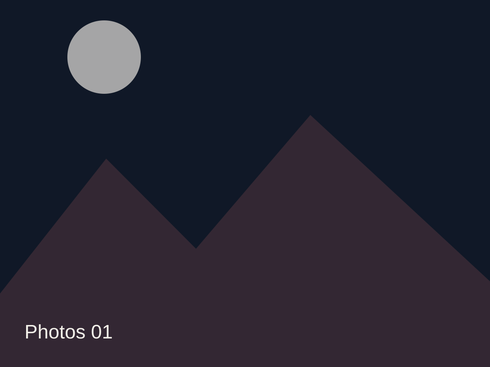
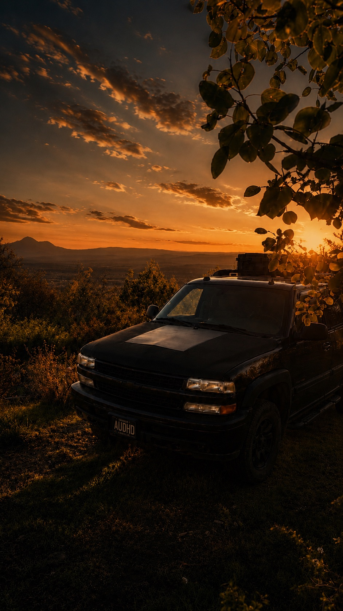
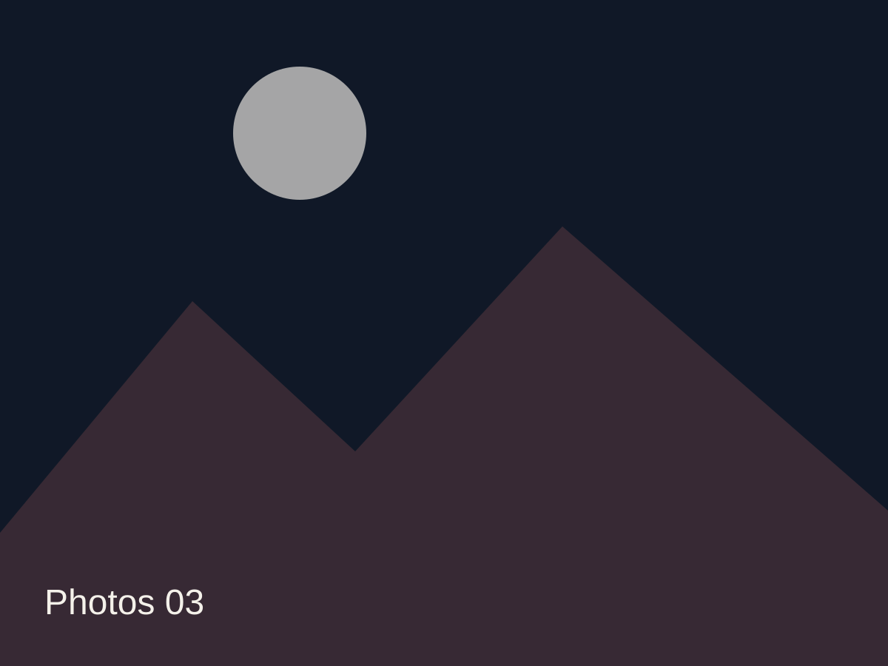
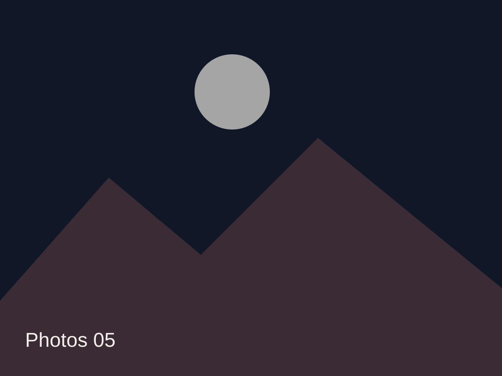
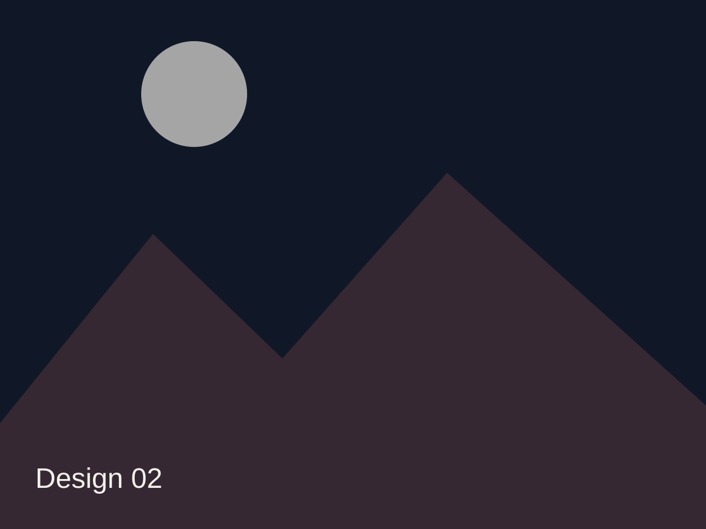
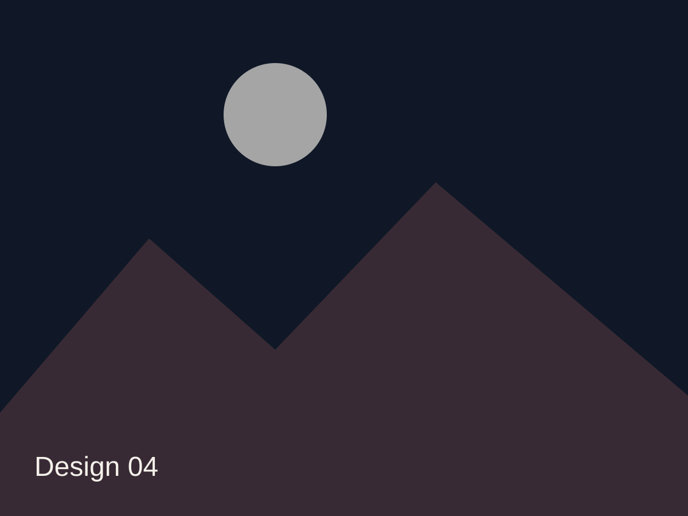
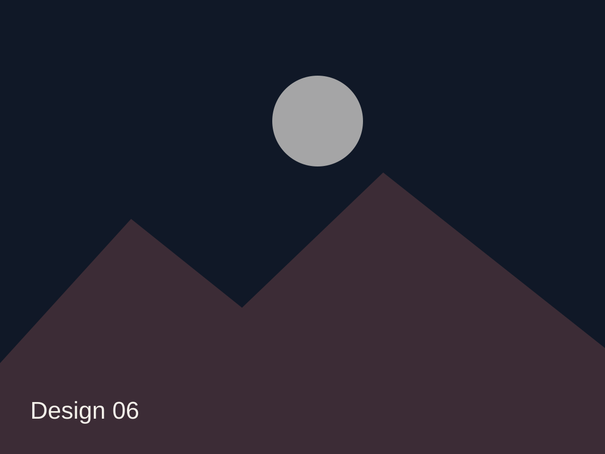
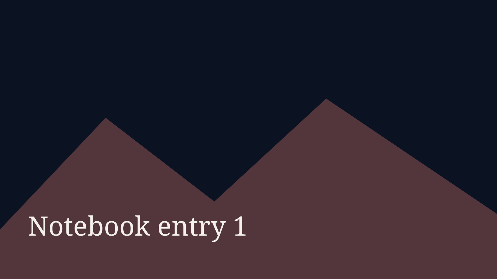
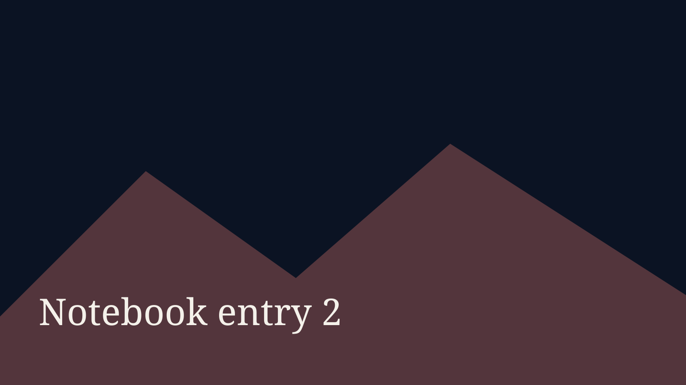

Field Notes 01
2026

Autism • ADHD • Tourette's
Stories, photographs, designs, and field notes from the road, the woods, and everywhere between.
My Story
I am a designer, photographer, writer, traveler, and professional collector of projects. Most days happen somewhere between Durango and a forest road, with Horizon carrying everything I need.
I have spent most of my life trying to build a version of life that actually fits me. That has meant changing direction more than once, learning how my autistic and ADHD brain works, living with Tourette’s, and making peace with the fact that my path was probably never going to look especially normal.
A lot of what I create comes from that space. I photograph the places that make me slow down. I design the brands and ideas I wish already existed.
Read the restPhotography
Recent photographs from mountains, roads, camps, weather, animals, and the quieter parts of the Southwest.



This year in numbers
Design
Brand systems, identity experiments, web concepts, logos, packaging, and the things that started as a rough note.



Notebook

The small roadside encounter that quietly became part of a much larger creative story.

What home looks like when it has four wheels, a worn map, and a changing view.
A notebook entry about design, unfinished projects, curiosity, and making things tangible.